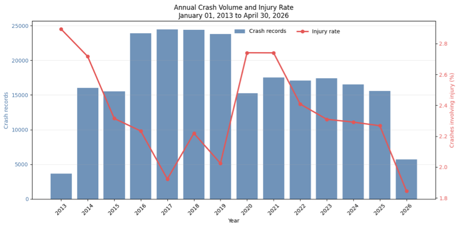
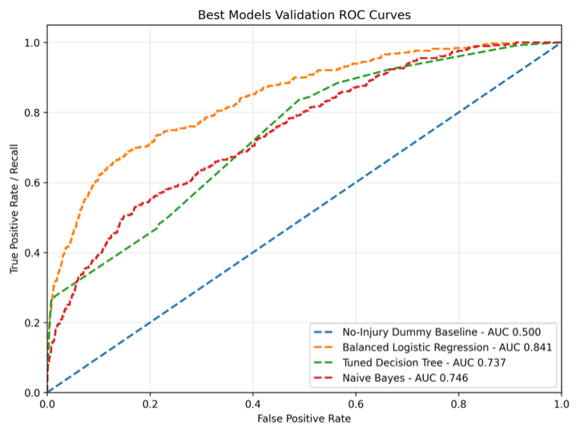

Applied classifiers
Motor Vehicle Accident Injury Classifier
Using more than 270,000 Denver crash records spanning over a decade, I compared logistic regression, decision tree, and naïve Bayes classifiers to predict whether a motor vehicle accident resulted in a serious injury or fatality.
Data
The data came from the City of Denver Open Data Repository and included accident time and location, road conditions, vehicle information, driver actions, and contributing factors. I also created temporal, geospatial, and mechanical features, including nighttime and weekend indicators, speed limits, highway indicators, vehicle size differences, and direction differences.

Approach
I compared the three model families with a no-injury baseline and evaluated probability thresholds under severe class imbalance. I used a temporal split, training on earlier accidents and evaluating on later observations to more closely reflect a real-world deployment setting.

Model evaluation
The final model was balanced logistic regression with a probability threshold of 0.48. Its performance on the held-out test set was:
| Metric | Score |
|---|---|
| Accuracy | 0.825 |
| Recall | 0.692 |
| Precision | 0.081 |
| F1 score | 0.145 |
| ROC-AUC | 0.845 |
| PR-AUC | 0.229 |
Project value
The model identified about 69% of serious injury or fatal crashes, but only about 8% of its positive predictions corresponded to one. That false-positive burden would be unacceptable for the motivating EMS dispatch scenario, so this is a demonstration of rare event classification and temporal model evaluation and not a system that should be deployed.
The project also demonstrates cleaning real-world public data, domain related feature engineering, geospatial integration, probability-threshold evaluation, model comparison, and basic automated testing.